Simulated VBF H→γγ event with 200 pileup, one endcap (η from 1.5 to 3)
03The machine
HGCAL at a glance
A sampling calorimeter: dense plates start the showers, thin active layers sample them. Two endcaps, 47 layers each, at −35 °C
CE-E, 26 layers of silicon: lead and copper-tungsten keep electron and photon showers short and narrow. About 28 radiation lengths
CE-H, 21 layers in stainless steel, brings the depth to about 10 interaction lengths. Silicon where radiation is highest, scintillator where the dose allows it, at a fraction of the cost
6 million silicon cells of 0.6 or 1.2 cm², and 240,000 scintillator tiles
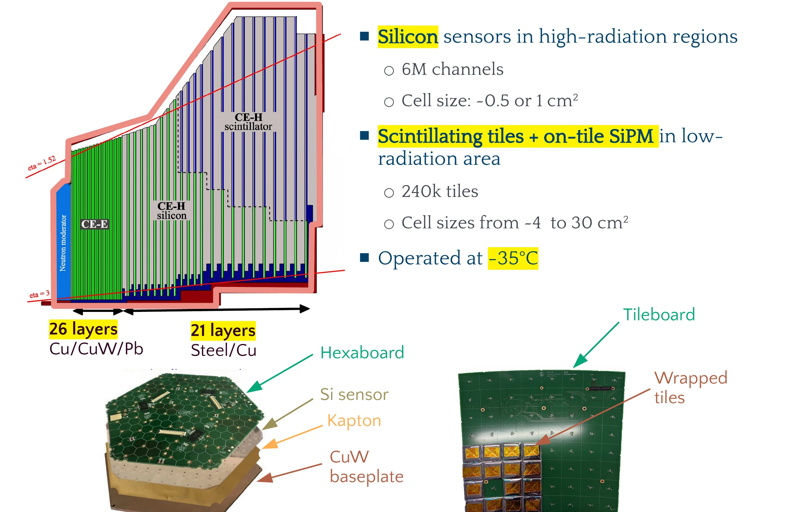
03The machine
The silicon module
A glued stack, from the bottom up:
Baseplate: copper-tungsten in CE-E, titanium in CE-H
Kapton foil: bias voltage and isolation
Silicon sensor: an 8-inch wafer, 120, 200 or 300 µm thick
Hexaboard: HGCROC chips read every cell through wire bonds
Cells of 0.6 cm² (high density) or 1.2 cm² (low density)
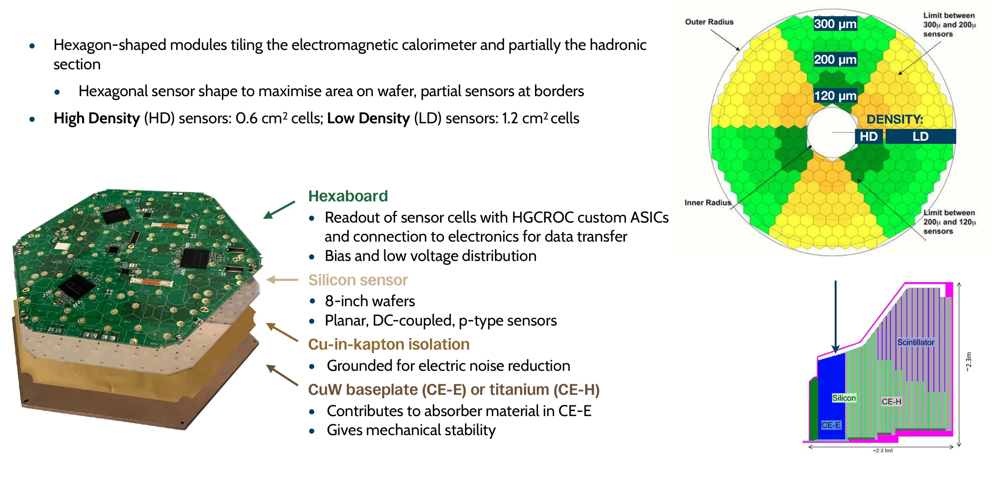
03The machine
Scintillator tiles
Farther from the beam, radiation is lower: plastic scintillator replaces silicon
Tiles of 4 to 30 cm², larger at larger radius
Each tile sits on its own SiPM: no fibres, no light guides
Inside: reflective foil, scintillator with a dimple that evens out the light, a SiPM of a few mm²
The same HGCROC chips read the SiPMs; LEDs calibrate every channel
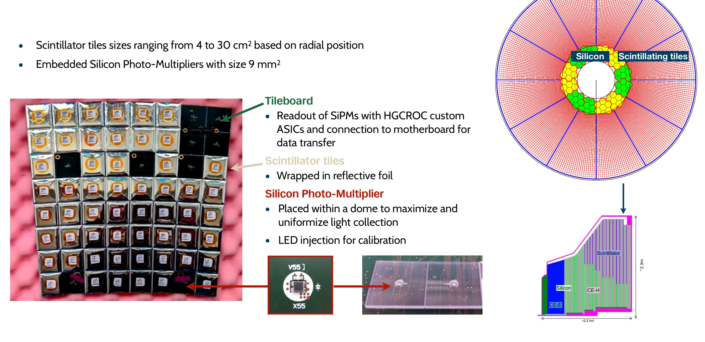
03The machine
Building a cassette
Modules sit on copper cooling plates: 60° wedges in CE-E, 30° in CE-H
High density near the beam: more than 400 cells of 0.6 cm². Low density farther out: about 200 cells of 1.2 cm². Partial modules fill the edges
A "train" on each line of modules: wagons connect them to an engine, which carries the lpGBT chips and the optical link
Power and optical fibres follow the trains out to the rim. It all fits in a 5.1 mm gap
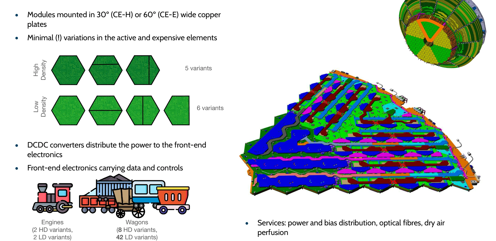
03The machine
Stacking, absorber and cooling
CE-E cassettes are stacked with their lead absorber plates (see-through here)
CE-H cassettes slide into the stainless-steel absorber, which carries the weight
CE-E sits on top of CE-H: more than 200 tonnes per endcap
Two-phase CO2 cools it all to −35 °C: 130 kW per endcap
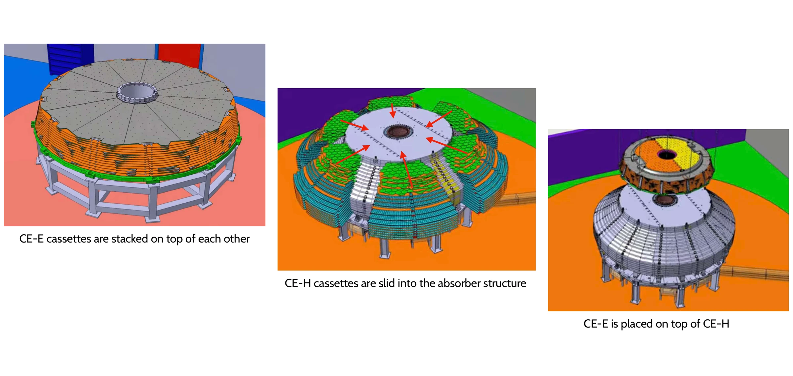
03The machine
From 6 million channels to the back end
04From hits to particles
Turning 6 million cells into particles
Hits: energy, position and time in every cell
CLUE clusters each layer by energy density: 10× fewer objects, ~300 events/s on GPUs
CLUE3D links layers into 3D "tracksters", over 200 events/s on GPUs
TICL combines tracksters with tracks and timing into particles
Toy simulation: a 60 GeV photon and a 40 GeV pion, with pileup
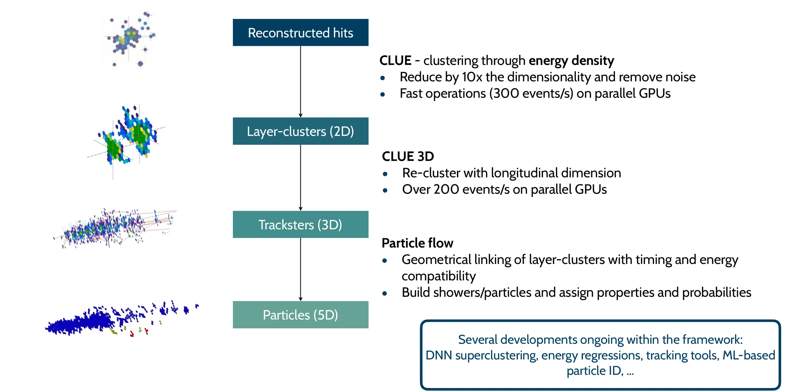
04From hits to particles
The fourth dimension
Every silicon cell measures time as well as energy
Together with the MIP Timing Detector, a shower is matched to its own collision
Result: much better rejection of pileup
−0.3 ns earlier0 this collision+0.3 ns later
Toy simulation: 30 ps per cell, collisions spread by 0.18 ns rms
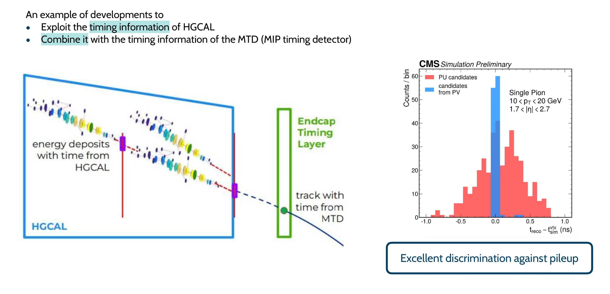
04From hits to particles
Does it work? The 2018 prototypes in beam
Prototype layers in the CERN SPS beam, positrons from 20 to 300 GeV
Linear: the measured energy follows the beam energy within ±1.5% above 50 GeV
Resolution: how much repeated measurements of the same energy scatter. It has two terms
Measured: S = 22% and C = 0.6%, on target for electrons and photons
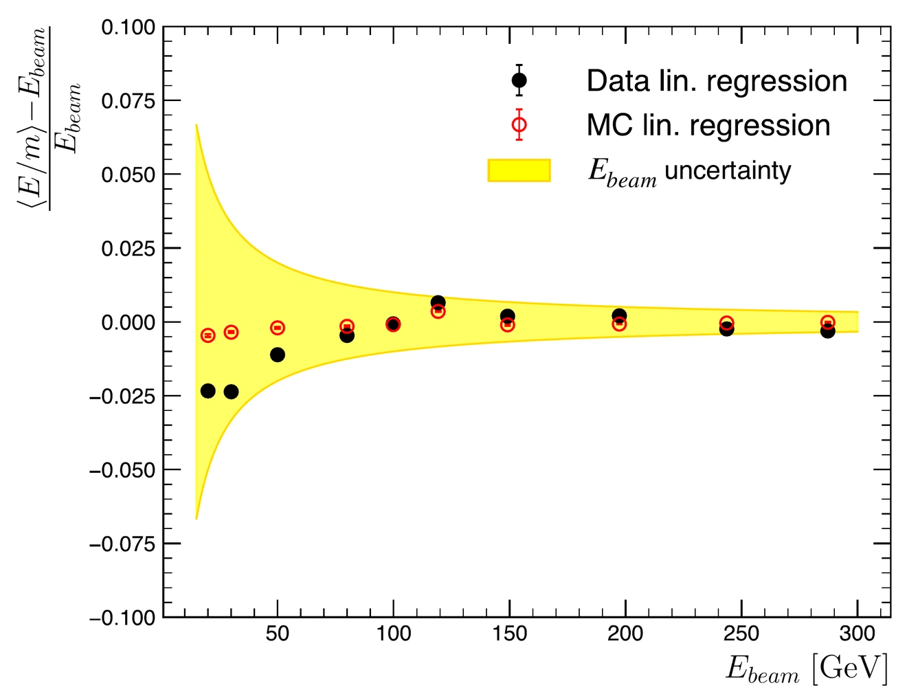
Linearity: (measured − beam energy) / beam energy, data (black) and simulation (red)
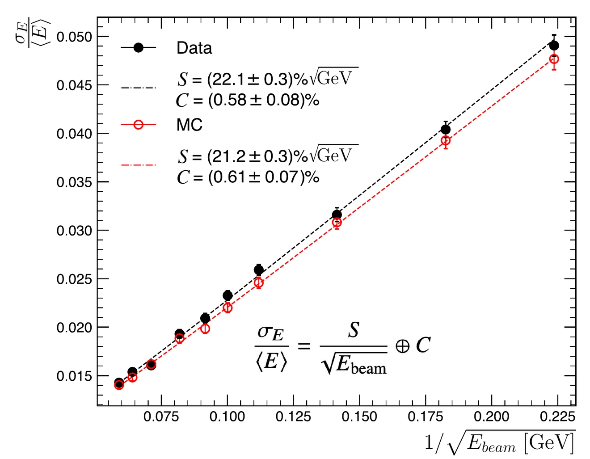
Energy resolution σE/E versus 1/√E, data (black) and simulation (red)
04From hits to particles
The same prototypes, as a clock
Every cell with a large enough signal also records when it arrived
To measure the resolution, the shower is timed against itself: even layers against odd layers
The spread of the difference shrinks as the energy grows, down to a floor
Measured floor: 16 ps for half a shower, on target
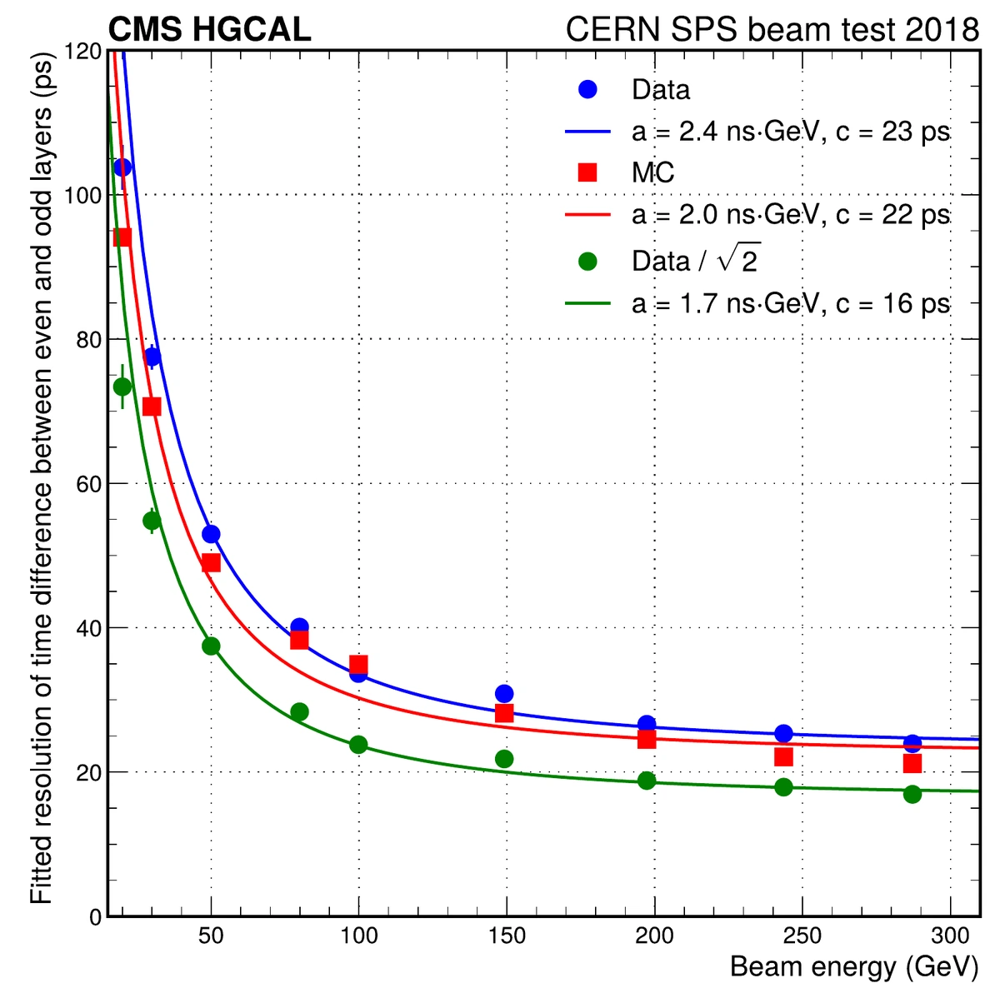
Spread of t(even) − t(odd) versus beam energy (blue); divided by √2, one half of the shower (green)
04From hits to particles
October 2025: the final electronics in beam
A full vertical slice, front end to DAQ, in the CERN SPS H2 beam: e, π and μ from 20 to 300 GeV
Silicon: 12 layers of modules
SiPM-on-tile: a 15-layer stack
Read out by the final back end; the data are being analyzed now
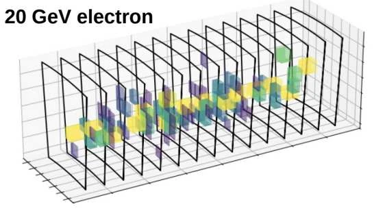
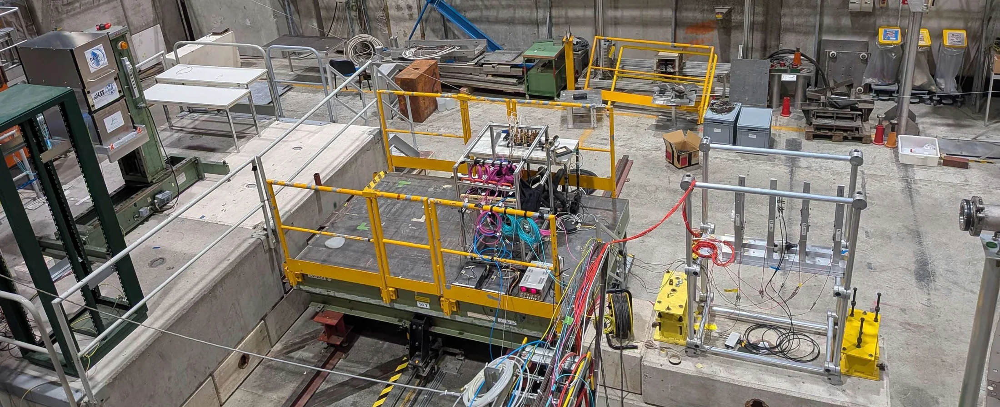
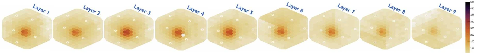
Online monitoring, 7 October 2025: a 100 GeV electron in silicon layers 1 to 9
04From hits to particles
Real hardware
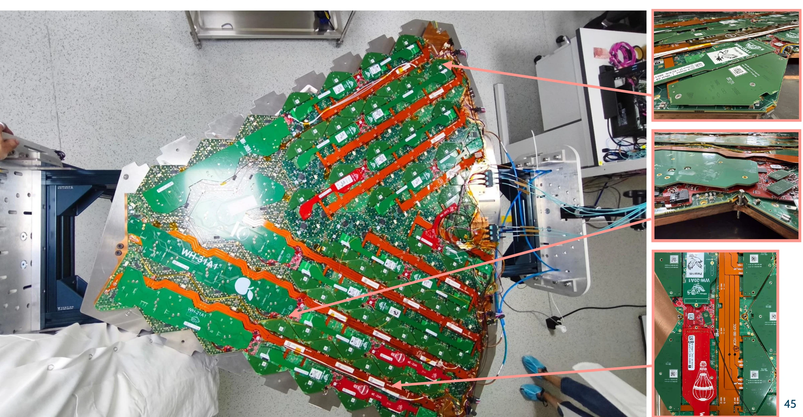
The first CE-E cassetteassembled at CERN: modules on both sides of a copper cooling plate1 / 3
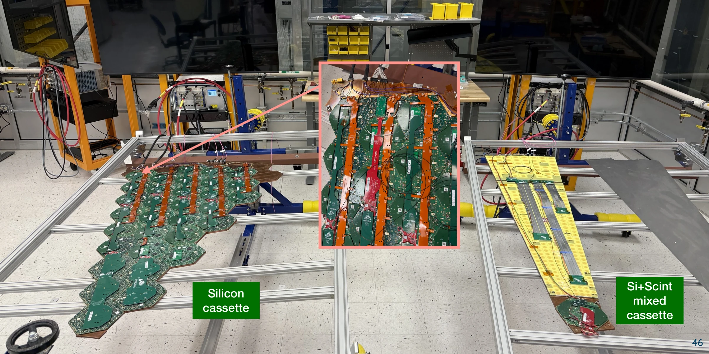
The first CE-H cassettesassembled at Fermilab: each one a 30° wedge of a layer2 / 3
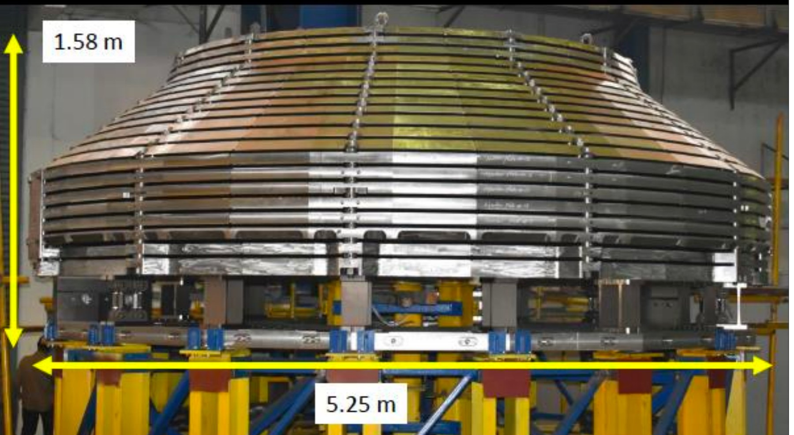
The CE-H absorberstainless steel, built in Pakistan, delivered to CERN in November 20253 / 3
05Our part
A hexaboard's journey
CE-H chain, through the USCE-E chain
1
Bare PCB
From a vendor in Lithuania for the US; a second vendor is in India
2
Hexaboard with HGCROCs
Readout chips and components mounted on the board
3 · UA
Quality control
Inspection and tests in our lab at Alabama
4
Module assembly
Texas Tech, Carnegie Mellon and UC Santa Barbara
5
Cassette assembly
CE-H cassettes at Fermilab, then on to CERN
CE-E
A second chain for CE-E
Modules from NTU and TIFR, cassettes assembled at CERN
05Our part
Quality control at Alabama: three stations
Hexaboards from the vendor
→
Station 1
Visual inspection
A camera scans the whole board
Software flags anything unusual
→
Station 2
Electrical tests
Do the HGCROCs respond?
Pedestal and noise of every channel
High-voltage leakage current
Response to injected charge
→
Station 3
Cold test
Thermal cycles down to −50 °C
Pedestals and noise again at −40 °C
→
Good boards go on to module assembly
A fault found here costs one board. Found after assembly, it costs a silicon sensor as well.
05Our part
Station 1: visual inspection
1 Visual2 Electrical3 Cold
We look for sheared-off components, scratches and bent boards
A scanner we built from 3D-printer parts moves each board under a microscope camera
The camera covers the board in a grid of overlapping fields, and software checks every image (next slide)
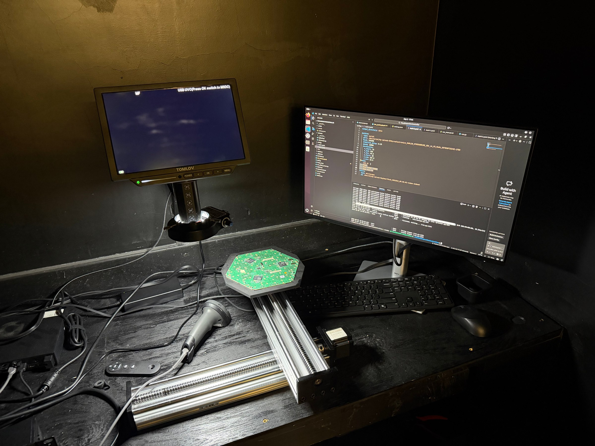
Microscope camerawith ring lightHexaboardon its carrierMotorised stagefrom 3D-printer partsBarcode scanneridentifies the boardControl softwarewritten in the lab
More in E. Centamore's talk, SESAPS 2026 session N05: “Agentic Implementation for Hardware Upgrades in the Compact Muon Solenoid”
05Our part
Finding defects automatically
1 Visual2 Electrical3 Cold
The camera steps over 8 × 5 fields. The 8 in the corners miss the board, so each board gives 32 images.
Schematic drawings. Code: github.com/cmsua/visual-inspection; a paper is in preparation.
05Our part
Station 2: the electrical test stand
1 Visual2 Electrical3 Cold
A Kria FPGA board stands in for the detector's readout: it configures the HGCROCs and reads them out
A multiplexer puts several boards on one controller
An in-house GUI runs every test, applies the limits and archives the results, so students can operate the stand
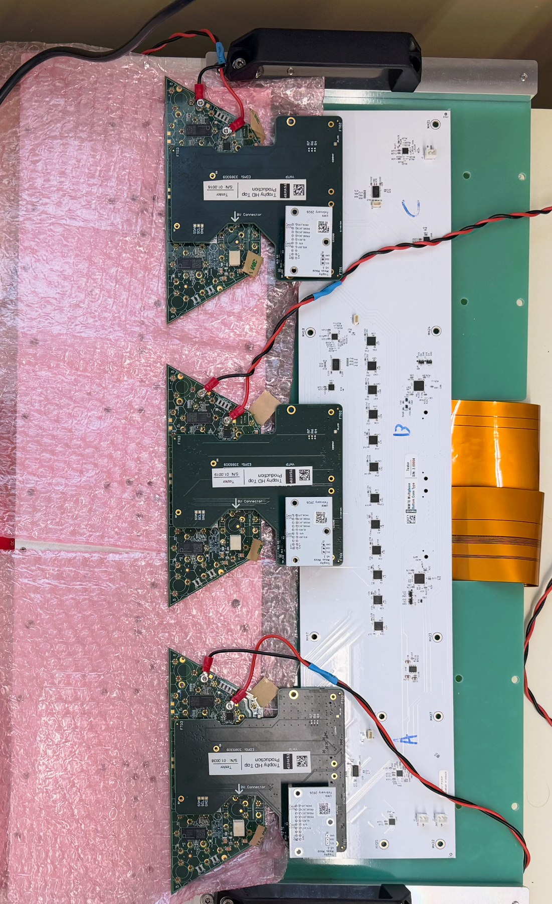
Partial boards, for the edges of the detector, go through the same tests
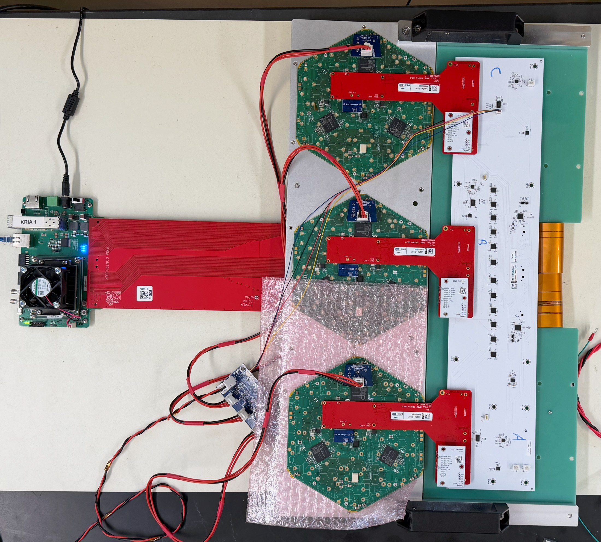
Kria FPGAcontrollerExtender boardHexaboardsunder test“Trophy” boardsplug into each hexaboardMultiplexer
05Our part
Pedestals and noise, channel by channel
1 Visual2 Electrical3 Cold
Illustration with simulated values
05Our part
High-voltage leakage current
1 Visual2 Electrical3 Cold
The hexaboard also carries the bias of its sensor: several hundred volts
With no sensor attached, no current should flow. We apply the voltage and measure what leaks through the board
Above the limit, the board is rejected: after assembly, its leakage could not be told apart from the sensor's
Illustration, not measured data
More in A. Jimenez Corella's talk, SESAPS 2026 session N01: “Hexaboard charge injection board testing system with synchronized clock generator; high voltage testing system with integrated user interface”
05Our part
Charge injection: testing with a known signal
1 Visual2 Electrical3 Cold
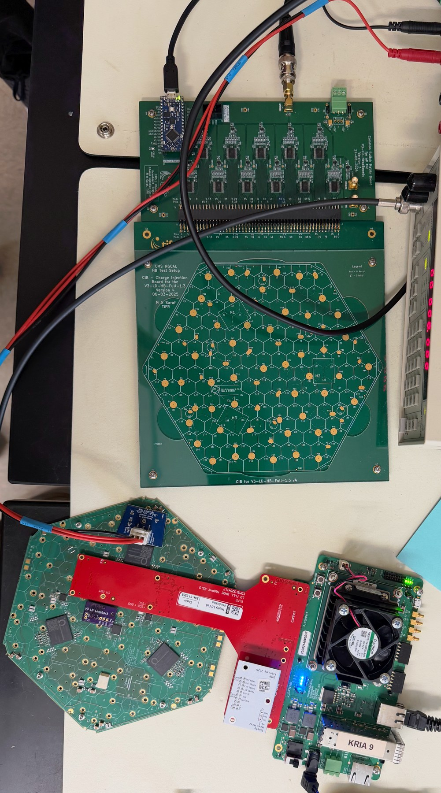
Switch matrixselects the pads to pulseCharge-injection boardpads laid out on the cell patternHexaboard under testKria FPGA
A quiet channel is not yet a working one: it must also respond to a signal
The injection board carries pads laid out on the hexaboard's cell pattern, and sends a known pulse of charge into the channels
A clock generator keeps the pulse in step with the 40 MHz sampling clock
More in A. Jimenez Corella's talk, SESAPS 2026 session N01: “Hexaboard charge injection board testing system with synchronized clock generator; high voltage testing system with integrated user interface”
05Our part
Station 3: thermal cycling and cold tests
1 Visual2 Electrical3 Cold
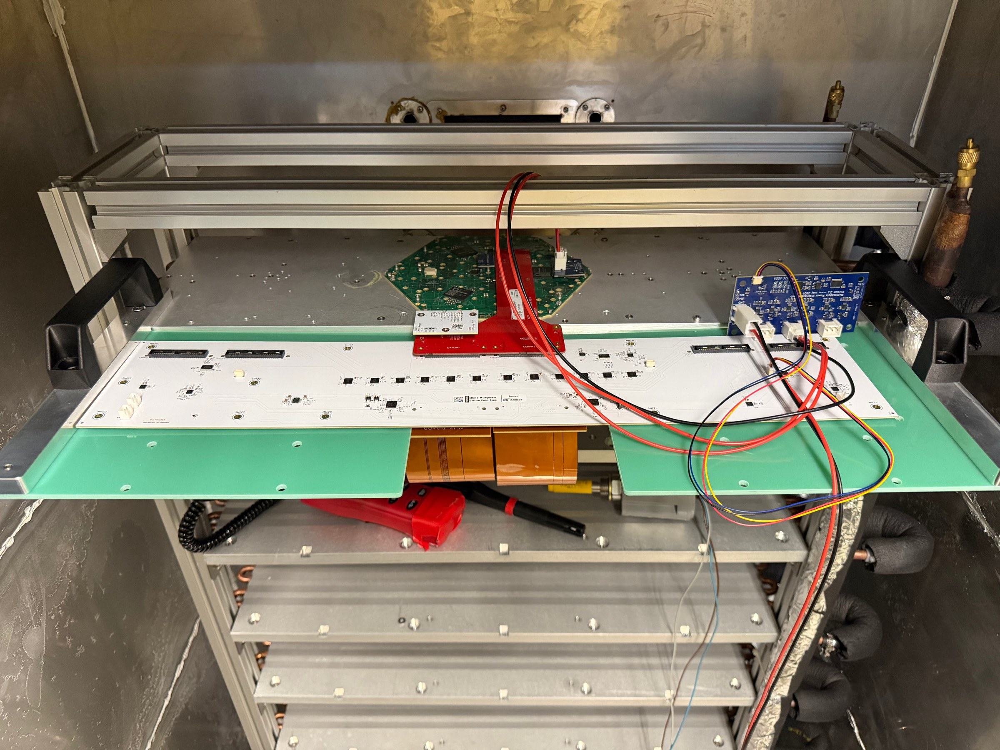
Hexaboardwith its trophy boardMultiplexerCooled shelves
HGCAL will run cold for its whole life: the boards must survive cooling down and warming up
Dry air keeps frost off the boards; PLC control of the cold box is in development